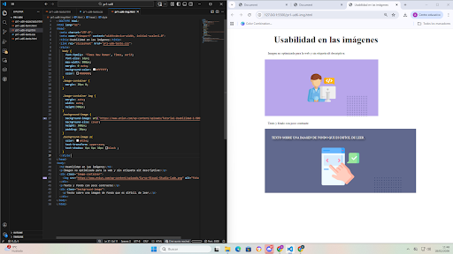

⬅️
Actividad 01 -Texto
En la actividad de texto, nos encontramos con un texto con los tamaños de jerarquía desiguales,
un interlineado inadecuado, un excesivo uso de mayúsculas,
así como un bajo contraste que no permite la buena legibilidad del texto
y unos párrafos demasiado extensos.
Además, el enlace que se observa de “pinche aquí” no es descriptivo y
aparece una lista sin elemento gráfico que la diferencie como lista.

Para mejorar la usabilidad del sitio, en primer lugar,
cambié el color de fuente al negro y a blanco dentro del recuadro gris oscuro.
Cambié la fuente actual por una tipografía legible con un tamaño de cuerpo de 16px
y un interlineado de 24px para evitar la saturación visual.
Eliminé las mayúsculas forzadas en los títulos para facilitar la lectura.
En el HTML, los párrafos extensos se dividieron en bloques de máximo 3 o 4 líneas
y las acciones de ciberseguridad deben estructurarse como una lista
sin ordenar para permitir un escaneo rápido.
Cambié el tamaño de uno de los párrafos que estaba extra-reducido a su tamaño normal.
Alteré las etiquetas de encabezados para abarcar desde el h1 hasta el h3 con tamaños entre 48px y 20px.
Finalmente, fué necesario sustituir el enlace "pinche aquí" por un texto descriptivo que indique claramente el destino al usuario.

Actividad 02 -Imágenes
En este ejercicio de imágenes nos encontramos con una imágen no optimizada y sin alt descriptivo.
También nos encontramos con un texto en imagen que no se diferencia bien
al no contrastar adecuadamente con el fondo de la imagen.
Además, también es conveniente hacer algún ajuste de texto:

tras optimizar los tamaños de las imágenes, escribir los respectivos alt,
contrastar correctamente el texto con imagen de fondo usando
text-shadow además del color y de aplicar algunos ajustes de texto,
así quedó nuestro HTML:

Actividad 03 -Formularios
En esta actividad nos encontramos con un formulario sin placeholders
que ayuden al usuario a saber cómo rellenar los campos,
sin asteriscos en los campos obligatorios,
un botón no prominente que se distinga adecuadamente,
el envío de formulario no se notifica y
además no es mobile first teniendo en cuenta los tamaños de móvil.
A todo esto hay que sumarle los problemas de texto
anteriormente tratados como el tamaño de fuente

Los cambios realizados incluyen un pequeño código javascript que notifica
del correcto envío del formulario al pulsar el botón de enviar,
además de los ajustes de tamaños y la incorporación de elementos
como asteriscos, placeholders y colores del botón
Toda la corrección se ha realizado primeramente en formato móvil
para asegurarnos de que el diseño sea totalmente mobile first.

Actividad 04 -Tablas
En esta actividad nos encontramos no solo problemas propios de la tabla,
sino también problemas de enlace, tamaño de fuente y espaciado que también corregiremos.
En cuanto a la tabla, nos encontramos que no tiene límites colapsados para separar la información.
Vemos que no hay una distinción de registros por parte del color de fondo, ya que, de hecho, no hay color de fondo.
No hay padding ni márgen adecuado.
La tabla no ocupa todo el ancho disponible para ayudar a su correcta visualización y sea un diseño adaptativo no rígido.

En cuanto a la barra de navegación, opté por posicionarla encima de todo en color oscuro
y con enlaces claritos y visibles bien espaciados.
En general se estableció una altura de línea de 24px y un tamaño de texto mínimo de 16px.
la tabla recibió un ancho del 100% para ocupar todo el ancho de manera adaptativa
y se puso un padding de 16px en cada celda,
con el texto alineado a izquierda.
se puso un color de fondo diferente al encabezado,
con un tamaño de fuente diferente y se definió un color diferente
para filas pares e impares para facilitar la correcta lectura.
También se puso un borde colapsado para diferenciar correctamente cada campo.